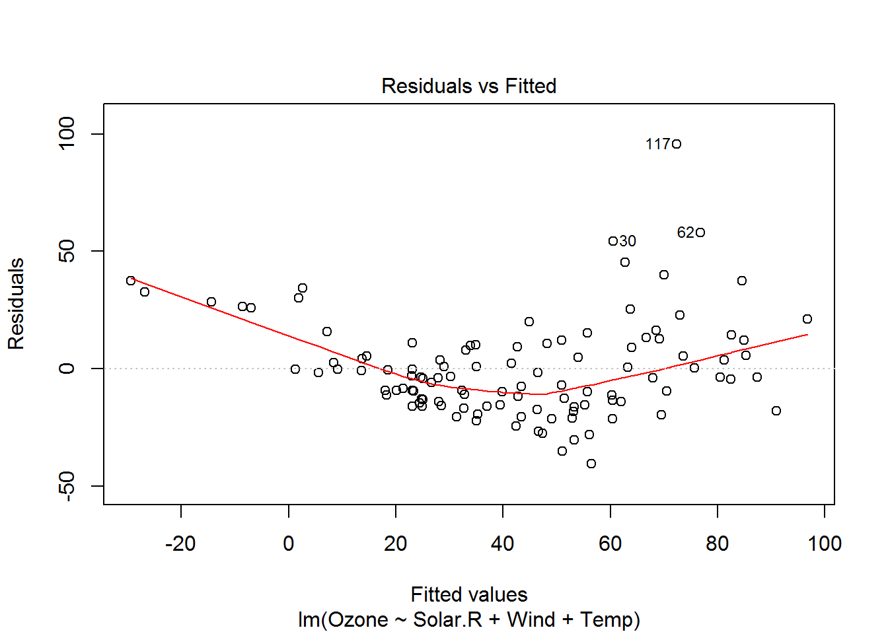
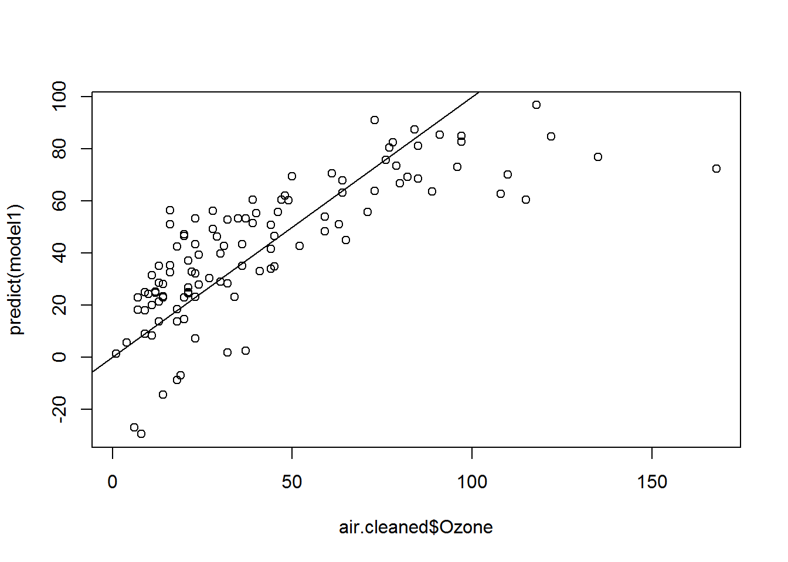
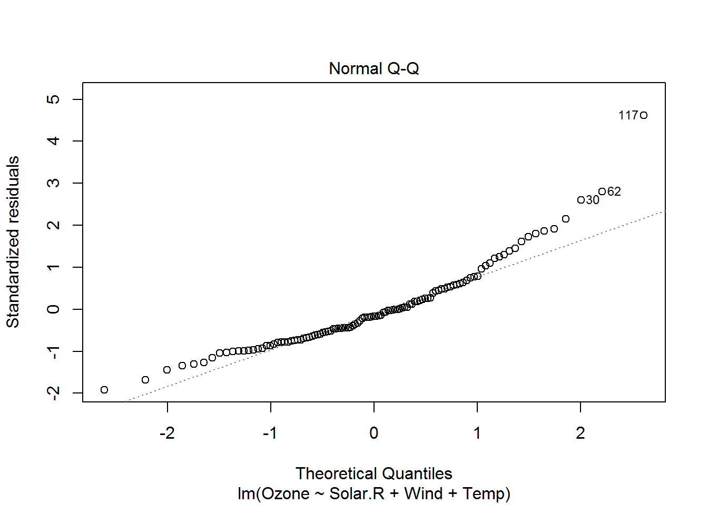
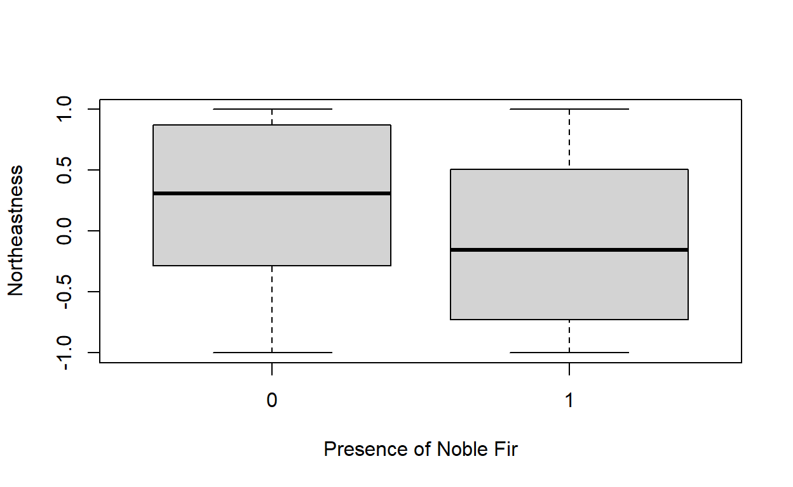

Lab Exercise 1
NRES 746
August 23, 2016
Introduction to R
This lab will provide a basic introduction to the R programming Language and the use of R to perform basic statistics. Much of the material from this lab was borrowed/modified from the previous instructor for this course (Peter Weisberg).
INTRODUCTION
In this course we will rely heavily on the R programming language for statistical computing and graphics (believe it or not, this website is actually built in R!). The purpose of this first laboratory exercise is to develop the level of familiarity with R that is needed to succeed in this course – and ultimately, to establish a foundation for you to develop your data analysis skills using R throughout your scientific career.
This lab exercise will extend over two laboratory periods (Sep. 1 and Sep. 8), with a report due on Sept. 16. As with all lab reports, please email the report to the instructor (in MS-Word format, or even better as an .RMD document) by midnight on the date due. You will work in groups of 3 but submit individual lab reports. One student in each group should be an “R guru” if possible. There is no page limit on this first report, which will consist of your responses to the particular exercises given.
SET UP
Log onto computers using your assigned login and initial password (instructor will provide). Open the R software from the program menu or desktop. Change the working directory to your personal folder in the course network space, preferrably in a subfolder called “Lab 1”.
PROCEDURE
STEP I: set up R!
Go to website http://cran.r-project.org/. This is the source for the free, public-domain R software and where you can access R packages, find help, access the user community, etc. The instructor will walk you through this website and provide some discussion on the R software program.
STEP II. Get familiar with R
From the R manual, “Introduction to R” you will implement all the steps in Appendix A, located here. This takes you far but without much explanation– it is a way to jump into the deep end of the pool. Depending on whether you are already familiar with R, you may also find the remainder of this document useful as you work your way through the course (and there are many other good introductory R resources available online… let me know if there is one you particularly like and I will add it to the course website (Links page) As you work your way through this tutorial (on your own pace), please ask the instructor if you are uncertain about anything.
STEP III. Central limit theorem demonstration
The beginning R user types expressions one at a time in the R console, and sees what happens. The more advanced R user saves code in text files using the R script window (or just uses RStudio). To gain some familiarity with using R scripts (and algorithms!), complete the following steps:
1. Review the meaning of the Central Limit Theorem, which states that the mean of a sufficiently large number of independent random variables will be approximately normally distributed.
2. Open the R script window from the File menu.
3. The following code for illustrating the central limit theorem was inspired by Teetor, Paul. 2011. R Cookbook. O-Reilly Media, Inc. (p. 45), with substantial modification. Type (or paste) this into your R script window (or Rstudio script window):
TRUEMIN <- 10
TRUEMAX <- 20
N_IND_SAMPLES <- 1000
SAMPLESIZE <- 10
lots <- 100000
datafountain <- runif(lots,TRUEMIN,TRUEMAX)
samplemean <- numeric(N_IND_SAMPLES)
for(i in 1:N_IND_SAMPLES){
sample <- sample(datafountain,SAMPLESIZE)
samplemean[i] <- mean(sample)
}
hist(datafountain,freq=F,ylim=c(0,1))
hist(samplemean,freq=F,add=T,col="red")- Experiment with executing this code in the following four ways:
- copy and paste from the script window into the console;
- use
key to execute line by line from within the script window;
- use
to select the whole code block, then to execute all at once;
- save the script to a text file with .R extension using File…Save from menu, and then run the script using the source() function, e.g.:
- copy and paste from the script window into the console;
source("H:\\Courses\\NRES746\\Lab1_Aug 30\\CentralLimitTheorem.R") QUESTION 1
Now modify the script to see how closely the distribution of sample means follows that of a normal distribution. Use a “quantile-quantile” plot to visualize how closely the quantiles of the sampling distribution resembles the quantiles of the normal distribution. Use the “qqnorm” function. To learn more about this function, type:
?qqnormASIDE: ?qqnorm will show you full help documentation for the function.
Plot the q-q plot next to the histograms. The plot on the left should be the comparison of histograms (for population distribution and distribution of sample means) shown in the original script (above). The plot on the right should be the q-q plot. You will need to add this line of code to the appropriate place:
par(mfrow=c(1,2)) # sets up two side by side plots as one row and two columnsIn addition, run a Shapiro-Wilk normality test, which tests the null hypothesis that a set of numbers (in this case the vector of sample means) indeed comes from a normal distribution (so what does a low p-value mean??). Use the “shapiro.test” function:
?shapiro.testSo… can you conclude that the sample means came from a normal distribution? Explain your reasoning.
QUESTION 2
The # sign used above allows the R programmer to insert comments adjacent to snippets of code, which facilitates readability of code (and lets the programmer remember later on what he/she was thinking when coding things a certain way!). To show the instructor that you understand all code in this short script, comment every line so as to describe its precise meaning, including all variables and functions. To accomplish this you will probably need to consult the R help documentation. The commented code for the central limit theorem demonstration, modified to test normality and produce two side-by-side plots, must be included in the laboratory report.
STEP IV. Learn some more advanced R features
A very useful introductory R tutorial can be found here, courtesy of NCEAS. Please take the time to complete this tutorial, including going through the exercises.
STEP V. Write some R functions
You now should know how to construct functions in R!
QUESTION 3.
Write the following functions, apply them as indicated, and list them in your laboratory report: 1. Coefficient of Variation. Apply this to the “height” vector in the “trees” dataset that installs with R as sample data. To learn more about the trees dataset:
?treesA function for drawing a regression line through a scatter plot. [hint: use the “abline” and “plot” functions]. Apply this function to the “height” and “volume” vectors in the “trees” dataset, and then to the “eruptions” and “waiting” vectors in the “faithful” dataset.
Now add a scatter plot smoother to the above function, making the smoother span (degree of smoothing) a user-defined option. [Hint: use the lowess function].
Now you should have the tools you need to create a function from the central limit theorem demonstration code you have previously worked with. Allow the user to vary the MU, SD, N and n parameters, but set each with default arguments. Test the function out for different parameter combinations.
QUESTION 4.
Determine a reasonable rule for how large a sample size is necessary to ensure that the sample mean follows a normal distribution (characterized by variance of \(sigma/n\)]) regardless of the distribution of the data. Justify your reasoning and include all relevant R code.
STEP VI. Multiple Regression Analysis in R: Air Quality Data
- Type the following for a list of sample datasets that come with the core R package (some of these you have already encountered).
library(help = "datasets")Examine the “airquality” dataset (use the “head” and “summary” functions). Note that there are missing values where ozone concentration data and solar radiation data were not collected.
We could ignore the missing values and conduct our regression analysis, since the default response of the lm (“linear model”) function is to omit cases with missing values in any of the specified parameters. However, to avoid problems later, we will omit them by constructing a new, “cleaned” dataset as follows:
air.cleaned <- na.omit(airquality) # you can call what’s created on the left-hand side anything you want!Conduct a multiple linear regression of ozone concentration as a function of solar radiation, wind and temperature. Use the “lm” function to conduct an ordinary least squares (OLS) regression analysis. Explore the R help or ask the instructor if you cannot quickly figure out how to do this.
Explore the regression outputs using the “summary” function, and explore regression diagnostics using, e.g. (depending on what you named the regression model object):
stats:::plot.lm(model1, which=c(1:4)) # in some cases, need to make sure the package is explicitly referenced!


hist(residuals(model1), breaks=10)
plot(predict(model1) ~ air.cleaned$Ozone); abline(0,1)
If no one in your group knows why you are doing any of this or what it all means, ask the instructor! That’s why he’s hanging around the lab…
- Consider the possibility that there may be an important interaction effect between solar radiation and temperature on influencing ozone concentrations. Explore that with a simple scatter plot where symbol size is scaled to ozone concentration:
with(air.cleaned, # with"" is a way to temporarily "attach" a data set to the workspace
symbols(Temp, Solar.R, circles=Ozone/100, ylab="Solar Radiation", xlab="Temperature", main="Interaction Plot", inches=FALSE)
)
# alternatively...
with(air.cleaned,
coplot(Ozone~Temp|Solar.R,rows=1)
)
- Now fit a second model that includes the interaction between solar radiation and temperature. Use the following formula to fit the interaction:
formula2 <- "Ozone ~ Wind + Solar.R * Temp" # you can name formulas...Explore regression outputs for the second model in the same way as you did for the first model without the interaction term.
Conduct an “F Test” to formally test whether the richer model (including the interaction term) fits the data significantly better than the reduced model (with fewer parameters) that lacks the interaction term. Note that the \(R^2\) value is inadequate for this purpose because \(R^2\) will always increase with additional parameters. Use the following syntax,
anova(model1, model2, test="F")QUESTION 5 (multiple regression part 1)
Briefly answer the following questions in the laboratory report: * On average, and for constant conditions of solar radiation and wind, by how much does ozone concentration increase (or decrease) for each 10-unit increase in temperature?
* What is the hypothesis that the p-values for the individual coefficients in the regression table) are designed to test? * Which regression model provides the more parsimonious fit (i.e. which is the best model), the model with or without the interaction term? Explain your reasoning. * Interpret the diagnostic plots. Do your regression models appear to be robust, or is further analysis and refinement needed?
VII. Multiple Regression Analysis, Exercise Two:
For this exercise, we will use tree data from a forest in the western Oregon Cascades.
We will fit a multiple linear regression model that predicts forest tree biomass as a function of environmental variables (including a mix of continuous and categorical predictors) and stand age. We will assess regression diagnostics, interpret the model and report the relevant effect sizes.
Obtain the TreeData.xls file from the /public/ folder. View this file in Excel. This describes a subset of forest inventory data from the Douglas-fir forests of western Oregon (n = 90, 0.1-ha sites). Arranged in columns from left to right, variables are: * Site: site identifier * Biomass: tree biomass (for all species) in Mg/ha, the response variable for Part 1 of the lab. * ABPR: the response variable of interest for the logistic regression part of the lab (next week), representing the presence/absence of Abies procera (noble fir) on a given site (coded 1 for presence). * StandAge: Maximum tree age in the 0.1-ha plot. This variable will be used as a proxy for successional stage. We assume that stand-replacing fires are the dominant form of disturbance and that stand age is a reasonable proxy variable for time since the last fire. * X, Y: geographic coordinates – UTM easting and northing, respectively * Elev: elevation (m) * Northeastness: slope aspect that has been linearized using a cosine transformation so that the aspect of 45 degrees has value 1 and aspect of 225 degrees has value -1. In this study area, this variable is expected to reflect a moisture gradient from moister (NE) to drier (SW) aspects. * Slope: slope steepness (degrees) * SlopePos: slope position, a categorical variable (i.e. factor) with three values: Valley, Slope and Ridge.
Save this file to a comma-delimited (.csv) file. This is a common file format for importing data into R. Import the data into R as a data frame (R’s data format for a flexible collection (list) of variables that may be of various data types), using the following command:
NobleFir.df <- read.csv("TreeData.csv")Inspect the resulting data object. Summarize it using the “summary” and “plot” functions.
Obtain a correlation matrix for biomass and the four numeric predictor variables using the “cor” function and by subscripting column locations on the data frame (ask instructor for explanation of syntax if needed):
cor(NobleFir.df[,c(2,4,7:9)])## Biomass StandAge elev Northeastness Slope
## Biomass 1.0000000 0.23848663 0.63768070 0.25744266 -0.5953404
## StandAge 0.2384866 1.00000000 0.08318645 -0.11719423 -0.1469981
## elev 0.6376807 0.08318645 1.00000000 -0.04070367 -0.1595090
## Northeastness 0.2574427 -0.11719423 -0.04070367 1.00000000 0.2157615
## Slope -0.5953404 -0.14699812 -0.15950902 0.21576148 1.0000000Are any of the predictor variables highly correlated?
Calculate Box Plots for the continuous predictor variables (excluding x and y coordinates) according to sites with or without noble fir. Use the “boxplot” function. What clear relationships, if any, emerge for how sites with and without noble fir differ with regard to their environmental setting?
boxplot(NobleFir.df$Northeastness~NobleFir.df$ABPR, xlab="Presence of Noble Fir", ylab="Northeastness") # for example
Use multiple linear regression to model A. procera biomass as a function of predictor variables (excluding the spatial coordinates), using the same approach for regression fitting and diagnostics as previously.
Rerun the regression to obtain standardized regression coefficients, allowing direct comparison of effect sizes for the continuous predictor variables (since all variables are then transformed to standard deviate units, i.e. mean centered on zero with standard deviation of one). The “scale” function provides an easy way to implement this.
Biomass_std.lm <- with(NobleFir.df,
lm(scale(Biomass) ~ scale(elev) + scale(Northeastness) + scale(Slope) + SlopePos + scale(StandAge))
)Visually assess whether regression errors (residuals) are spatially autocorrelated using the “symbols” function:
with(NobleFir.df,
symbols(x,y,circles=abs(residuals(Biomass_std.lm)), inches=0.3, ylab="Northing", xlab="Easting", main="Errors from Biomass Regression Model")
)
QUESTION 6 (tree regression)
Answer the following questions in the laboratory report: * Can forest biomass be reliably predicted by topographic variables and stand age? * Does the model provide a good fit to the data? * Is the regression statistically significant, and what does this mean? * Is there spatial variation in model goodness of fit? * Which of the environmental influences are most important? * Do these effects make ecological sense?
STEP VIII. Playing with algorithms
QUESTION 7: Algorithmic t-test
Ensure that you understand the “brute-force t-test” code from Lecture 1. Then complete the following exercises: * Repeat the same exercise, but using a different underlying distribution- say, the binomial (“rbinom”) or the Poisson (“rpois”). Compare with a standard t-test. Which test do you trust more? Why? * Modify the above algorithm to allow for unequal sample sizes. Compare with a standard t-test. Can you identify any cases where the t-test results (as performed using “t.test”) differ substantially from your “brute-force” algorithmic results? * Now, what about if we wanted to relax the assumption of equal variances? How would you modify the above algorithm to do this?
QUESTION 8: Bootstrapping
Ensure that you understand the bootstrapping code from Lecture 1 (estimating confidence intervals). Then complete the following exercises: * Generate bootstrap confidence intervals around the regression parameters. Compare with the standard confidence intervals given by R in the “lm” package. * Modify the algorithm to select the top model from among all possible models (including interaction terms)